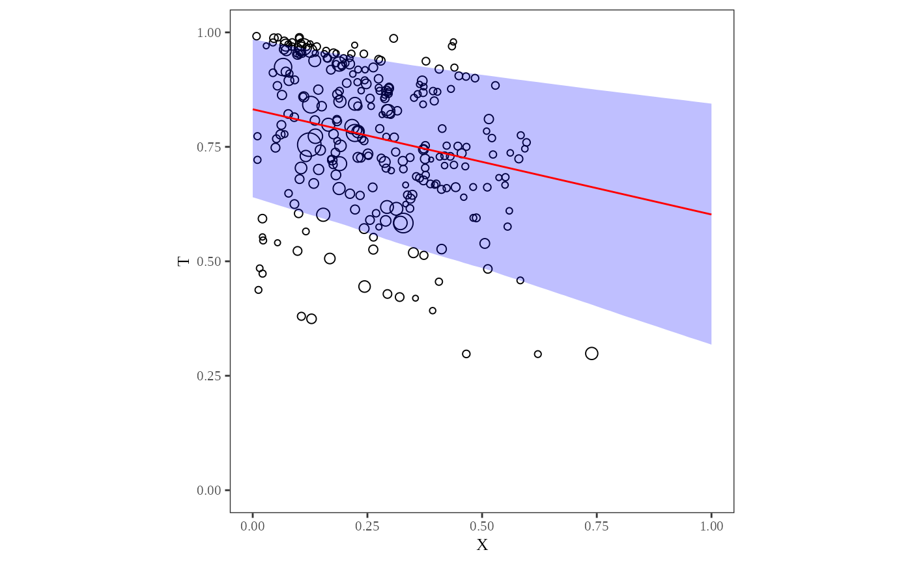
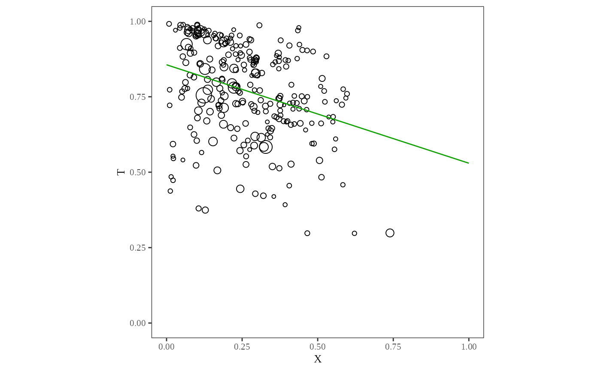

\(X_i\) by \(T_i\) scatterplot with circles sized proportional to \(N_i\).
Usage
plot_xt(
ei.object,
options = list(density = TRUE, fit = TRUE, CI = 0.8, goodman = FALSE)
)Arguments
- ei.object
The output of
ei().- options
The list of options
density: Showing density estimate.
fit: Showing \(X_i\) by \(T_i\) on the plot with estimated \(E(T_i|X_i)\)
CI: Showing a confidence interval with a specfied statistical level.
goodman: Goodman's regression.
Examples
data(matproii)
suppressMessages({
ei_res <- ei(formula = t ~ x, total = "n", data = matproii)
})
# `plot_xt()` function
plot_xt(ei_res)

# `plot_xt()` with options
plot_xt(ei_res, options = list(CI = 0.95, fit = FALSE, goodman = TRUE))
